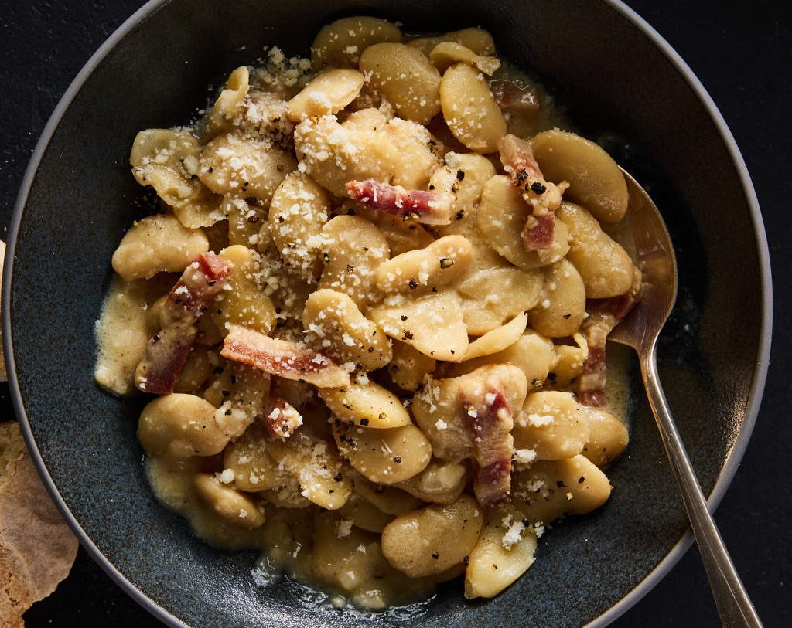

These creamy white beans will leave you thinking about them for weeks. This is a simple dish that will take about 20 minutes to whip out of the kitchen and into a bowl.
Adding in the pancetta gives the dish a ton of salty, meaty flavor that's a little cleaner than bacon. It's recommended that you use pancetta from a butcher over packaged.
- 2 tablespoons olive oil
- 4oz pancetta, sliced into batons
- 5 garlic cloves, smashed and chopped
- 3 15oz cans white beans (cannelini beans work well), drained
- 2 tablespoons lemon juice (from about 1/2 lemon)
- 1/2 cup or 1 3/4 ounces grated pecorino cheese, plus more for serving
- 1 teaspoon black pepper, plus more to taste
- 1/2 cup hot water (or chicken stock)
- In a large pot or Dutch oven, warm the olive oil over medium heat. Add the pancetta
and cook, stirring often, until some of the fat has rendered and the pancetta is starting to crisp,
about 5 minutes. (Add a splash of water or stock if the pancetta starts to burn before the fat renders.)
Add the garlic and cook, stirring, until the pancetta is crisped and brown and the garlic is soft and fragrant,
about 5 minutes.
- Increase the heat to medium-high, stir in the beans and lemon juice, and cook, stirring, until the beans are hot,
about 3 minutes. Turn off the heat and stir in the Pecorino, black pepper and hot water (stock). Stir vigorously
until the sauce is creamy and emulsified, about 1 minute. Serve immediately, topped with more pepper and Pecorino.